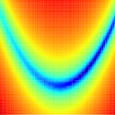

Subsections
minimise.calculate
 
Calculate the model parameters or the current target function value.
minimise.calculate(verbosity=1)
verbosity: The amount of information to print to screen. Zero corresponds to minimal output while higher values increase the amount of output. The default value is 1.
The operation of this user function is two-fold and depends on whether the solution for the models of the current analysis are found by direct calculation or by optimisation. The dual operations are:
- Direct calculation models -
- For these models, the parameters will be directly calculated from the base data. This will be the exact solution and the user function will store the parameter values. The grid search and optimisation user functions are not implemented for this analysis type.
- Optimised models -
- This will call the target function normally used for optimisation for each model using the current parameter values. This can be used to manually find the chi-squared value for different parameter values. The parameter values will not be affected.
The relax user manual (PDF), created 2014-11-24.